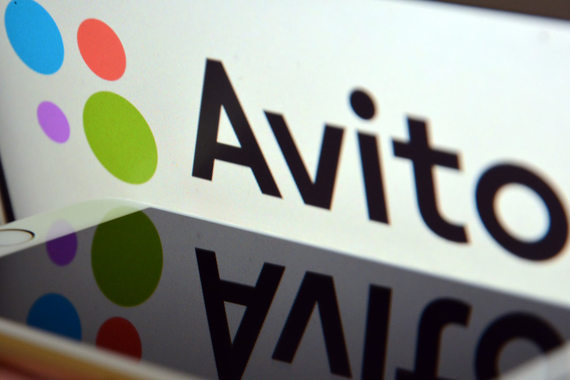

Создатель проекта Avito.ru Йонас Нордландер делится опытом создания посещаемого сайта.
После того как я продал интернет-аукцион Tradera, покупатель, eBay, предложил мне контракт на два года. Я проработал один год и ушел. Они предлагали мне пакет гарантий, бонусы, сказали, что в случае отказа я не буду иметь права создавать похожий бизнес нигде, кроме России и Индонезии, — стран, где eBay не представлен. Я подписал это обязательство и ушел.
Идея поехать в Россию меня не посещала никогда. Но однажды мне позвонил Юрий Мильнер из DST. Он увидел, что я продал свою компанию, а потом ушел из eBay, и сказал: «Почему бы тебе не приехать в Россию? У меня есть проект, которым ты мог бы руководить». Это был конец 2006 года. Я приехал, встретился с ним и его партнером Григорием Фингером, познакомился с Дмитрием Гришиным, который сейчас владеет Mail.ru Group. Предложение Мильнера было очень хорошим, но я хотел пригласить несколько шведских инвесторов, которые вкладывали средства в мою прошлую компанию, чтобы это было совместным предприятием. Мильнер сказал, что не хочет никаких денег — ему был нужен только менеджмент. Я отказался.
Но эта поездка что-то во мне перевернула. Я почувствовал вкус к России: просмотрел много данных и понял, что это фантастический рынок. Здесь проникновение интернета всё ещё на уровне около 40%, и эта цифра будет расти. Для сравнения, Швеция, где я делал бизнес раньше, по населению не больше Москвы.
Я вернулся в Стокгольм с идеей создать сайт объявлений. Встречался с инвесторами, но на тот момент у них было много возможностей и уже сформированные приоритеты. И вот тогда я встретил Филипа Энгельберта. На тот момент он только что вложил деньги в инвестиционную компанию, которая незадолго до того купила всем известные Yellow Pages. Он изучил бизнес-план, поверил в него и стал партнером в моих проектах. Я уехал в Россию.

После того как я продал интернет-аукцион Tradera, покупатель, eBay, предложил мне контракт на два года. Я проработал один год и ушел. Они предлагали мне пакет гарантий, бонусы, сказали, что в случае отказа я не буду иметь права создавать похожий бизнес нигде, кроме России и Индонезии, — стран, где eBay не представлен. Я подписал это обязательство и ушел.
Идея поехать в Россию меня не посещала никогда. Но однажды мне позвонил Юрий Мильнер из DST. Он увидел, что я продал свою компанию, а потом ушел из eBay, и сказал: «Почему бы тебе не приехать в Россию? У меня есть проект, которым ты мог бы руководить». Это был конец 2006 года. Я приехал, встретился с ним и его партнером Григорием Фингером, познакомился с Дмитрием Гришиным, который сейчас владеет Mail.ru Group. Предложение Мильнера было очень хорошим, но я хотел пригласить несколько шведских инвесторов, которые вкладывали средства в мою прошлую компанию, чтобы это было совместным предприятием. Мильнер сказал, что не хочет никаких денег — ему был нужен только менеджмент. Я отказался.
Но эта поездка что-то во мне перевернула. Я почувствовал вкус к России: просмотрел много данных и понял, что это фантастический рынок. Здесь проникновение интернета всё ещё на уровне около 40%, и эта цифра будет расти. Для сравнения, Швеция, где я делал бизнес раньше, по населению не больше Москвы.
Я вернулся в Стокгольм с идеей создать сайт объявлений. Встречался с инвесторами, но на тот момент у них было много возможностей и уже сформированные приоритеты. И вот тогда я встретил Филипа Энгельберта. На тот момент он только что вложил деньги в инвестиционную компанию, которая незадолго до того купила всем известные Yellow Pages. Он изучил бизнес-план, поверил в него и стал партнером в моих проектах. Я уехал в Россию.